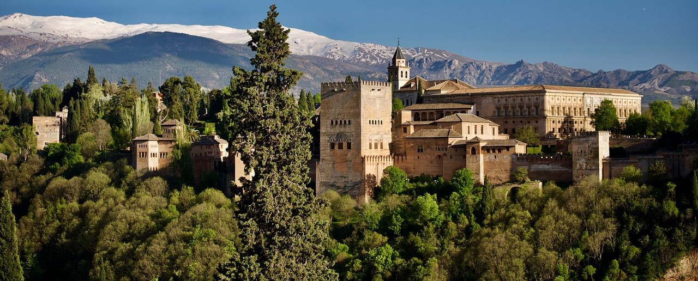

Granada, un frammento di Oriente portato in Occidente
L'Alhambra sopravvive nonostante la sua fragilità. E poiché è proprio scalando le sue pendici che questa "Mitologia dei giardini" è riaffiorata nella mia memoria, forse è il caso di spendere qualche parola al riguardo.
Anche l'Alhambra è un Paradiso terrestre. Un Paradiso arabo, cioè un giardino coltivato "all'ombra delle spade". Come sfuggirvi quando vedete la sua vegetazione verde scuro stagliarsi contro i suoi bastioni color fiamma e i suoi bastioni color fiamma profilarsi sulle cime scintillanti della Sierra Nevada? Sì, l'Alhambra è un paradiso arabo, un poema nato dal matrimonio tra neve e fuoco. Da dove viene lo straordinario senso di bellezza che emana? Dal fatto che incarna questo particolare tipo di giardino con una tale perfezione che nessun altro può essere immaginato per rivaleggiare con esso.
Oasi e labirinto al tempo stesso, è costituito da una moltitudine di spazi verdi e cortili che si sovrappongono l'uno all'altro con un superbo disprezzo per l'ordine e la simmetria. Qui non c'è una radura nel cuore della foresta. Nessun asse mediano che si estende all'infinito. Tutto è chiuso, recintato, ripiegato su se stesso. Si entra da una piccola porta laterale che non sembra tanto un ingresso quanto una piccola breccia nei bastioni. Ciò non significa che il giardino sia privo di vie di fuga verso il mondo esterno. Abbondano i panorami lontani, tanto più suggestivi perché appaiono quasi sempre dove non ci si aspetterebbe.
I giardini dell'Alhambra sono allo stesso tempo così complessi e ricchi, così intrecciati e segreti, che non si sa letteralmente da che parte iniziare. Da dove cominciare? Dall'interno o dall'esterno? Cominciamo dall'esterno, perché è così che li vediamo per primi...
Ai piedi di un anfiteatro di montagne le cui cime superano i tremila metri e "da cui scendono due fiumi che scorrono dalla neve al grano" (Garcia Lorca), gli Abenceragi hanno stabilito una fortezza. Perché prima di essere un giardino, l'Alhambra è una fortezza. Una cintura di bastioni corona lo sperone roccioso su cui è costruito e che si protende come una prua verso la pianura. Questo bastione, coronato da merli, è rinforzato da potenti torri quadrate. In passato difendevano il palazzo degli emiri; oggi vegliano sulla pace dei giardini. Cioè il loro compito è sempre stato nobile. Il loro colore ocra, che in alcuni punti diventa porpora, si combina magnificamente con il verde degli alberi (Al Hamra, in arabo, significa "la Rossa"; forse questi muri erano originariamente più scuri? Se è così, dovevano avere il colore del sangue). Ricordano altri bastioni, anch'essi incredibilmente fieri: quelli di Aleppo, quelli di Marrakech. Ma l'Alhambra è molto più delle sue rivali: è una fortezza nel cui cuore si trova un Paradiso.
Jacques Benoist-Méchin